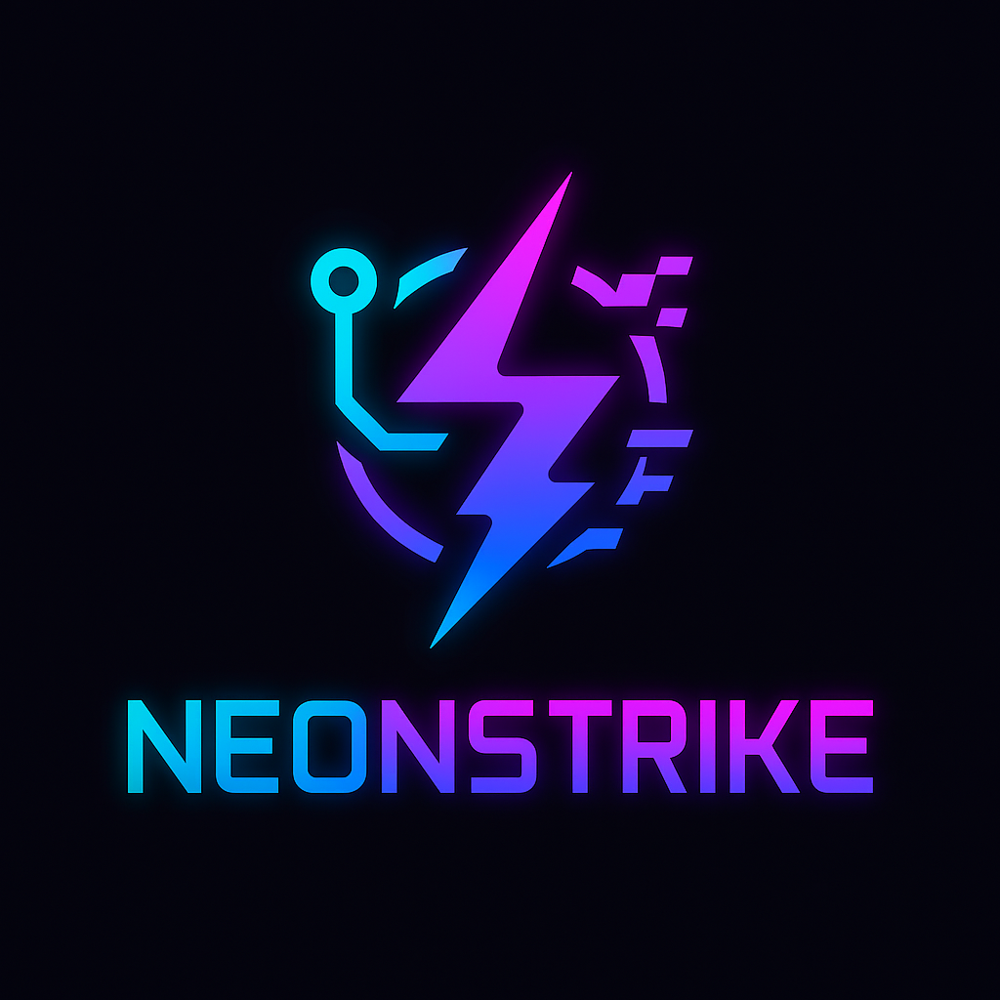

POLÍTICA DE PRIVACIDAD
Última actualización: 21/11/2026
Esta política explica qué datos personales trata el juego NeonStrike2D (la aplicación para Android y PC y su servidor), para qué, durante cuánto tiempo y qué derechos tienes.
1. Responsable
- Responsable: Alberto Claros Lopez
- Contacto: albertoclaroslaboral@gmail.com
NeonStrike2D es un proyecto independiente, desarrollado como Trabajo de Fin de Grado.
2. Qué datos tratamos
Si creas una cuenta
| Dato | Para qué |
|---|---|
| Nombre de usuario | Identificarte en el juego, en tu lista de amigos y en el ranking |
| Iniciar sesión | |
| Contraseña | Iniciar sesión. Nunca se guarda tal cual: solo se guarda un resumen cifrado (hash) que no permite recuperarla |
| Fecha de alta | Gestión de la cuenta |
Si entras con Google
Si eliges "Sign in with Google", Google nos envía un token firmado que el servidor verifica. De ese token usamos:
| Dato | Para qué |
|---|---|
| Email de tu cuenta de Google (solo si Google lo da por verificado) | Crear tu cuenta o vincularla con la cuenta que ya tenías con ese email |
| Identificador de tu cuenta de Google | Reconocerte cuando vuelvas a entrar con Google |
| Nombre de tu perfil de Google | Proponerte un nombre de usuario, que puedes cambiar al momento. No se guarda aparte |
Las cuentas creadas con Google no tienen contraseña. No recibimos tu contraseña de Google ni accedemos a ningún otro dato de tu cuenta de Google. El inicio de sesión lo gestiona Google según su política de privacidad.
Mientras juegas con cuenta
| Dato | Para qué |
|---|---|
| Resultados de partida: puntuación, oleada alcanzada, si ganaste y fecha | Guardar tu progreso y elaborar el ranking |
| Partidas cooperativas: sala, jugadores, inicio, fin y ganador | Registrar la partida jugada con otro jugador |
| Amistades: solicitudes enviadas y recibidas, su estado y fecha | La lista de amigos y las invitaciones a partida |
| Estado de conexión (en línea o no) | Mostrar a tus amigos si estás conectado. Solo se guarda en la memoria del servidor mientras estás conectado |
| Posición de tu nave durante una partida cooperativa | Mostrársela al otro jugador. No se guarda: se reenvía en el momento |
En tu dispositivo (no se envían al servidor)
- Si marcas "recordar", tu email y un token de sesión, para no tener que iniciar sesión cada vez. Se borran al cerrar sesión, al borrar la cuenta o al desmarcar la opción.
- Tus ajustes: idioma, volumen de la música y los efectos, y la disposición de los controles.
Si juegas como invitado, no se crea ninguna cuenta ni se envían datos personales al servidor.
Lo que no hacemos: el juego no muestra anuncios, no usa herramientas de analítica ni de seguimiento, no tiene compras, no accede a tu ubicación, contactos, cámara ni micrófono, y no vende ni cede tus datos a nadie.
3. Base legal
- Ejecución del servicio que pides al crear la cuenta: iniciar sesión, guardar partidas, amigos, partidas cooperativas.
- Interés legítimo en mostrar el ranking público y en mantener el servicio seguro.
4. Qué es público
- El ranking muestra a cualquier jugador el nombre de usuario, la mejor puntuación y la mejor oleada de los 10 mejores jugadores.
- Cualquier jugador con cuenta puede buscarte por tu nombre de usuario para enviarte una solicitud de amistad.
- Tu email nunca se muestra a otros jugadores.
Por eso, no uses tu nombre real ni datos personales en el nombre de usuario.
5. Dónde se guardan y quién los trata
- El servidor del juego y su base de datos están alojados en Railway (región US West, en California, Estados Unidos). Railway actúa como encargado del tratamiento y solo guarda los datos para prestar el servicio.
- La web del juego está alojada en Netlify.
- Si entras con Google, Google gestiona el inicio de sesión como responsable independiente de los datos de tu cuenta de Google.
- Como cualquier servicio en internet, estos proveedores pueden registrar datos técnicos de la conexión (como la dirección IP) en sus registros, por motivos de seguridad y funcionamiento.
- Todas las comunicaciones entre el juego y el servidor van cifradas (HTTPS y WSS).
6. Transferencias internacionales de datos
El servidor del juego y su base de datos están en Estados Unidos, fuera del Espacio Económico Europeo (EEE). Por eso, los datos de tu cuenta y de tus partidas se transfieren a Estados Unidos.
- Destinatario: Railway Corporation, proveedor del servidor, como encargado del tratamiento.
- Garantía: las cláusulas contractuales tipo aprobadas por la Comisión Europea, incluidas en el acuerdo de tratamiento de datos del proveedor (artículo 46 del RGPD).
- Los datos técnicos de conexión que registra Netlify al visitar la web también pueden tratarse fuera del EEE.
- Puedes pedir información sobre estas garantías o una copia de ellas escribiendo a albertoclaroslaboral@gmail.com.
7. Cuánto tiempo los guardamos
- Los datos de la cuenta, partidas y amistades, mientras la cuenta exista. Si la borras, se eliminan al momento; las copias de seguridad del servidor que aún los contengan desaparecen en 30 días como máximo.
- El estado de conexión y la posición en partida solo existen mientras estás conectado.
- Los datos de tu dispositivo, hasta que cierres sesión, cambies los ajustes o desinstales el juego.
8. Borrar tu cuenta
Puedes borrar tu cuenta y todos sus datos (partidas, resultados y amistades) desde el juego, en Opciones → DELETE ACCOUNT, o pedirlo sin el juego escribiendo a albertoclaroslaboral@gmail.com desde el email de la cuenta, indicando tu nombre de usuario. Los pasos están en la página de borrado de cuenta.
9. Tus derechos
Puedes pedir en cualquier momento el acceso, la rectificación, la supresión, la portabilidad, la limitación o la oposición al tratamiento de tus datos escribiendo a albertoclaroslaboral@gmail.com. Responderemos en un plazo máximo de un mes.
Si crees que no hemos atendido bien tu solicitud, puedes reclamar ante la Agencia Española de Protección de Datos (www.aepd.es).
10. Menores
El juego no está dirigido a menores de 14 años. Los menores de 14 años no deben crear una cuenta sin el consentimiento de sus padres o tutores. Si eres padre, madre o tutor y crees que un menor ha creado una cuenta, escríbenos y la borraremos.
11. Seguridad
Las contraseñas se guardan con un hash seguro, las comunicaciones van cifradas y las sesiones caducan. Ningún sistema es completamente seguro, pero aplicamos medidas razonables para proteger tus datos.
12. Cambios
Si cambiamos esta política, publicaremos la nueva versión en esta página con su fecha. Si el cambio es importante, lo avisaremos también en el juego.
Consulta también los términos de uso.
PRIVACY POLICY
Last updated: 21/11/2026
This policy explains which personal data the NeonStrike2D game (the Android and PC app and its server) processes, why, for how long, and what rights you have.
1. Controller
- Controller: Alberto Claros Lopez
- Contact: albertoclaroslaboral@gmail.com
NeonStrike2D is an independent project, developed as a university final degree project.
2. Data we process
If you create an account
| Data | Purpose |
|---|---|
| Username | Identify you in the game, in your friends list and in the leaderboard |
| Sign in | |
| Password | Sign in. It is never stored as is: only a one-way hash is stored, which cannot be turned back into the password |
| Sign-up date | Account management |
If you sign in with Google
If you choose "Sign in with Google", Google sends us a signed token that the server verifies. From that token we use:
| Data | Purpose |
|---|---|
| Your Google account email (only if Google marks it as verified) | Create your account, or link it to the account you already had with that email |
| Your Google account identifier | Recognise you when you sign in with Google again |
| Your Google profile name | Suggest a username, which you can change right away. It is not stored separately |
Accounts created with Google have no password. We never receive your Google password or access any other data in your Google account. Sign-in is handled by Google under its privacy policy.
While you play with an account
| Data | Purpose |
|---|---|
| Match results: score, wave reached, whether you won, and date | Save your progress and build the leaderboard |
| Co-op matches: room, players, start, end and winner | Record matches played with another player |
| Friendships: requests sent and received, their status and date | Your friends list and match invites |
| Connection status (online or not) | Show your friends whether you are online. Only kept in the server's memory while you are connected |
| Your ship's position during a co-op match | Show it to the other player. It is not stored: it is relayed in real time |
On your device (not sent to the server)
- If you tick "remember me", your email and a session token, so you don't have to sign in every time. They are deleted when you sign out, delete your account or untick the option.
- Your settings: language, music and sound effects volume, and control layout.
If you play as a guest, no account is created and no personal data is sent to the server.
What we don't do: the game shows no ads, uses no analytics or tracking tools, has no purchases, does not access your location, contacts, camera or microphone, and never sells or shares your data.
3. Legal basis
- Performance of the service you request when creating an account: signing in, saving matches, friends, co-op matches.
- Legitimate interest in showing the public leaderboard and keeping the service secure.
4. What is public
- The leaderboard shows any player the username, best score and best wave of the top 10 players.
- Any player with an account can look you up by username to send you a friend request.
- Your email is never shown to other players.
For this reason, don't use your real name or personal details in your username.
5. Where data is stored and who processes it
- The game server and its database are hosted by Railway (US West region, in California, United States). Railway acts as a processor and only stores the data to provide the service.
- The game's website is hosted by Netlify.
- If you sign in with Google, Google handles the sign-in as an independent controller of your Google account data.
- Like any internet service, these providers may record technical connection data (such as IP address) in their logs for security and operational reasons.
- All communication between the game and the server is encrypted (HTTPS and WSS).
6. International data transfers
The game server and its database are located in the United States, outside the European Economic Area (EEA). For this reason, your account and match data is transferred to the United States.
- Recipient: Railway Corporation, the server provider, acting as a processor.
- Safeguard: the standard contractual clauses approved by the European Commission, included in the provider's data processing agreement (Article 46 GDPR).
- Technical connection data recorded by Netlify when you visit the website may also be processed outside the EEA.
- You can ask for information about these safeguards or a copy of them by writing to albertoclaroslaboral@gmail.com.
7. How long we keep data
- Account, match and friendship data, for as long as the account exists. If you delete it, the data is erased immediately; server backups that may still contain it are erased within 30 days at most.
- Connection status and in-match position only exist while you are connected.
- Data on your device, until you sign out, change your settings or uninstall the game.
8. Deleting your account
You can delete your account and all its data (matches, results and friendships) from the game, in Options → DELETE ACCOUNT, or request it without the game by writing to albertoclaroslaboral@gmail.com from the account's email address, stating your username. The steps are on the account deletion page.
9. Your rights
You can request access to, rectification, erasure or portability of your data, or restrict or object to its processing, at any time by writing to albertoclaroslaboral@gmail.com. We will reply within one month.
If you believe we have not handled your request properly, you can lodge a complaint with the Spanish Data Protection Agency (www.aepd.es) or the authority in your country.
10. Children
The game is not directed at children under 14. Children under 14 should not create an account without their parents' or guardians' consent. If you are a parent or guardian and believe a child has created an account, contact us and we will delete it.
11. Security
Passwords are stored with a secure hash, communications are encrypted and sessions expire. No system is completely secure, but we apply reasonable measures to protect your data.
12. Changes
If we change this policy, we will publish the new version on this page with its date. If the change is significant, we will also announce it in the game.
See also the terms of use.